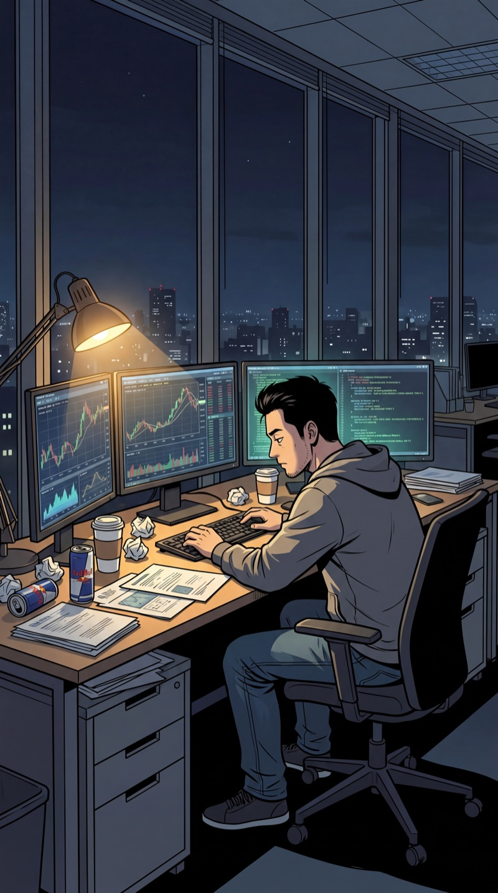
凌晨三点半，上海陆家嘴某栋写字楼的17层，只有我一个人还亮着灯。
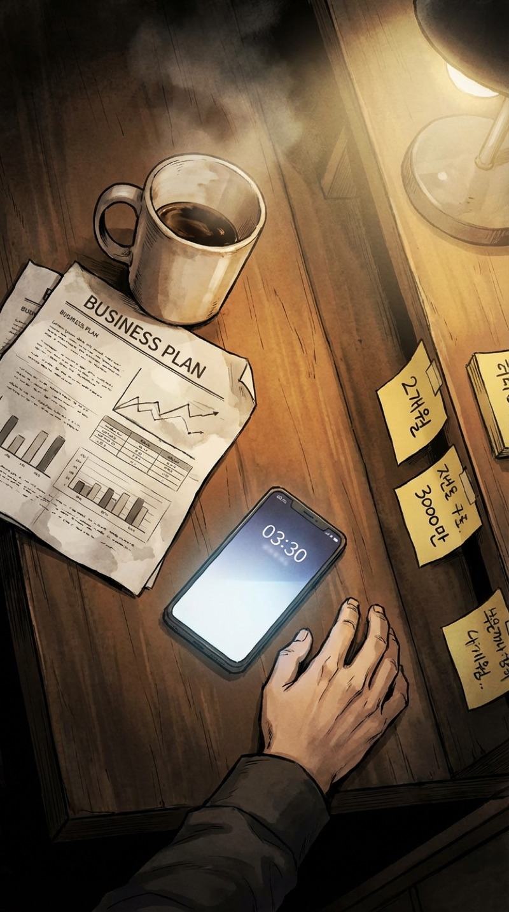
第四杯咖啡已经凉了。BP改了第七版，投资人赵总的话还在耳边转："小朱啊，你们这估值……从三亿跌到三千万，你自己说说，还有什么故事可讲？"
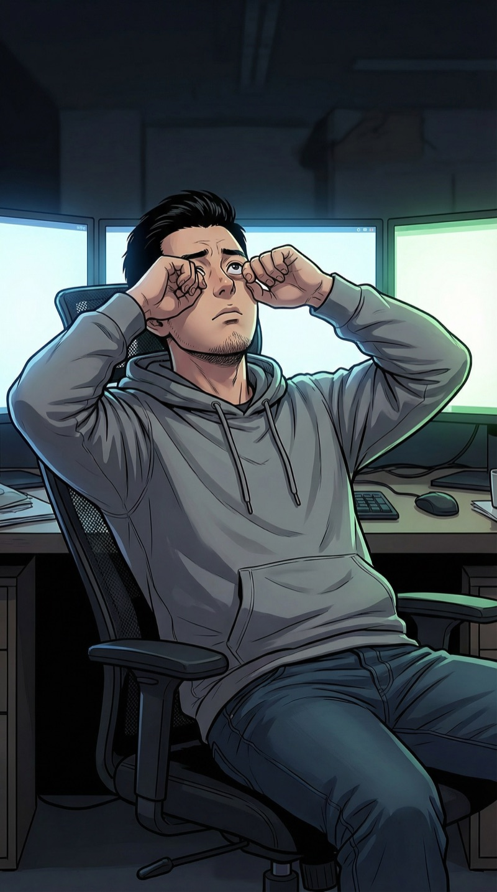
还有什么故事可讲？我揉了揉眼睛。公司账上的钱够撑两个月。两个月。连我家那只猫的口粮都比这长情。
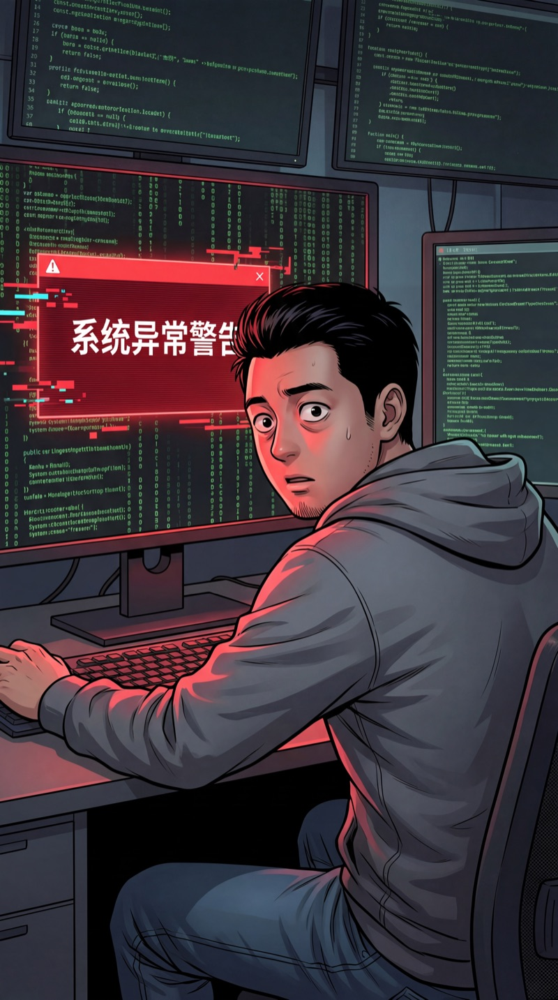
突然，屏幕闪了一下。中间那台显示器弹出一个红色警告框——系统异常警告：检测到时间流异常。
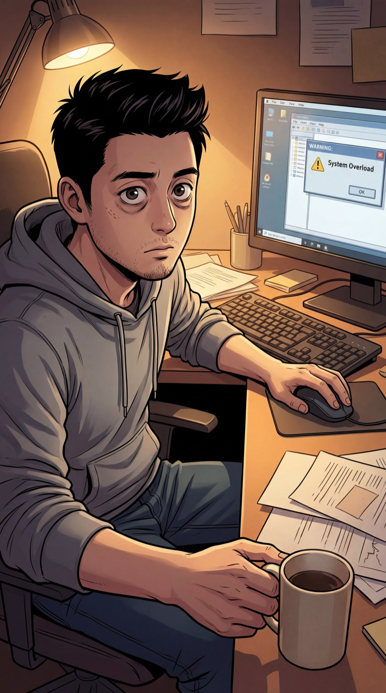
我瞄了一眼，随手点了关闭。又是哪个实习生写的测试弹窗没删干净。端起凉咖啡灌了一口。
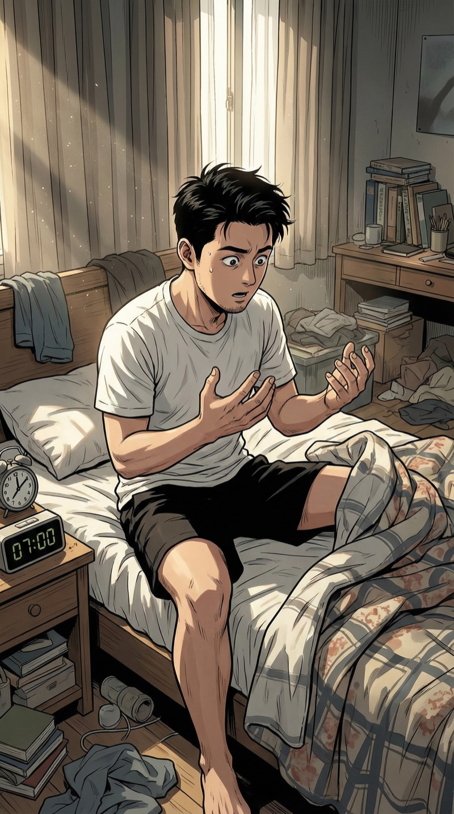
"嘀嘀嘀嘀——"
我猛地坐起来。阳光刺得我睁不开眼。闹钟显示七点整。
我什么时候回家的？
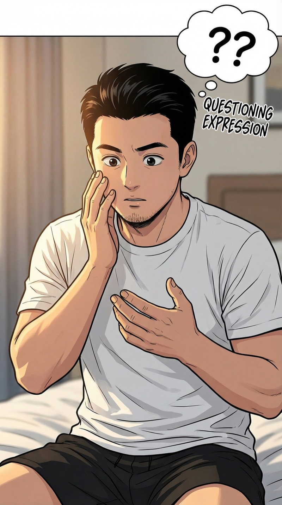
我摸了摸自己的脸。真实的触感，真实的胡茬。昨晚在办公室加班到三点半，然后……然后就到了这里？
掐了一下大腿——疼。好，不是梦。那是穿越？……等等，穿越到今天算穿越吗？
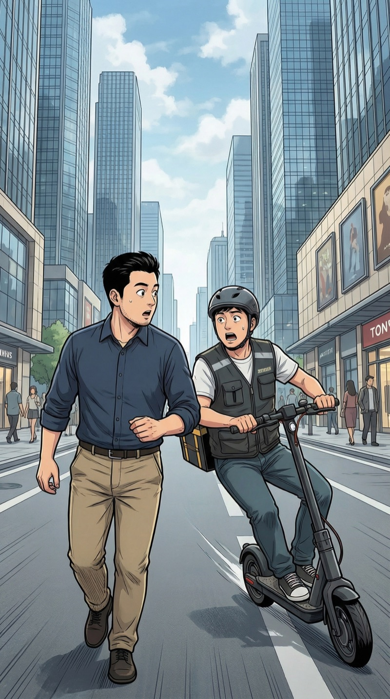
上班路上，我故意换了一条路走。拐角处，一辆外卖电动车差点撞上我——"诶！看路啊大哥！"
……这个声音，这个骑手，昨天也差点撞我。一模一样。连骂人的语气都没变。
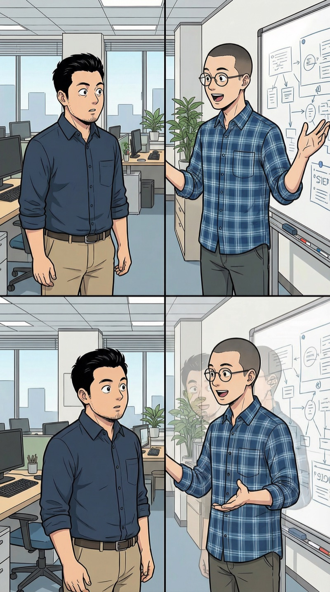
到了公司，小王在白板前比划——和昨天说的一样的话，一样的手势，连那个把"架构"说成"驾骨"的口误都一样。
不对。非常不对。
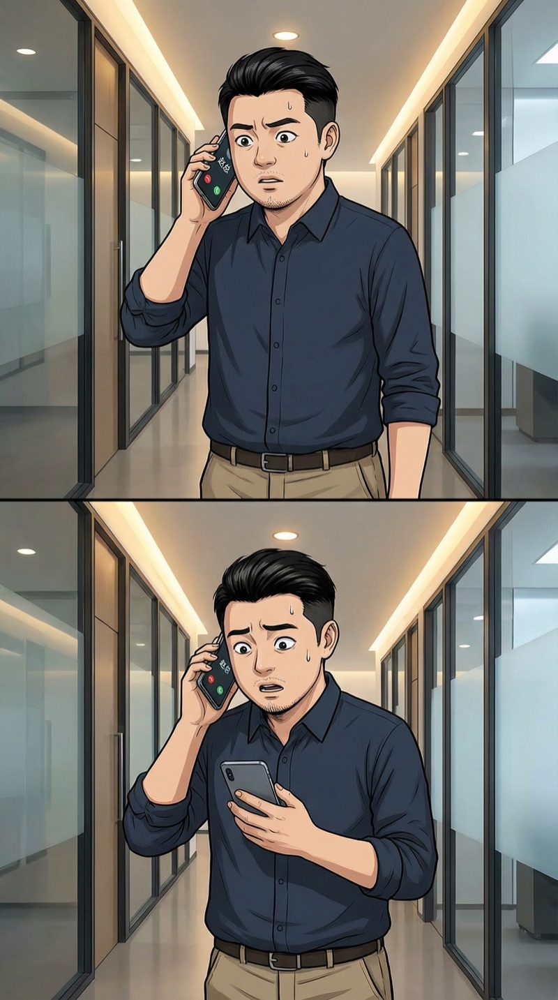
手机震了。屏幕上显示"赵总"。我接起来，他说的每个字我都能提前预判——
"小朱啊，你们这估值……"
今天，是昨天。
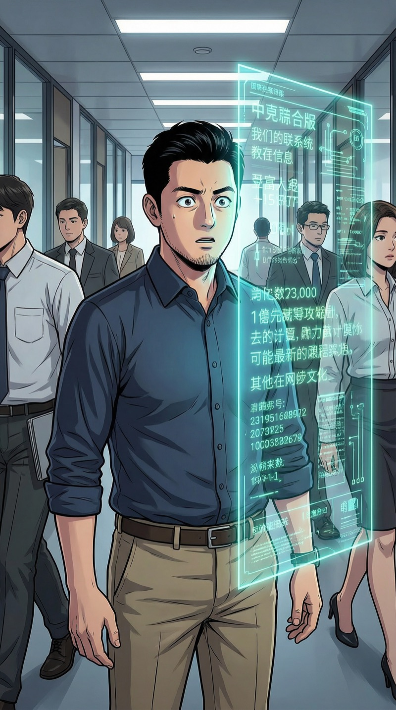
就在我挂掉电话的那一刻——一个半透明的面板凭空出现在我眼前。
周围的同事若无其事地从它穿过，就像它不存在一样。
但我看得一清二楚。
╔══════════════════════════╗
║ 循环次数: 001 ║
║ 已解锁技能: 0/??? ║
║ 今日可改变节点: 3 ║
║ 隐藏任务: ??? ║
╚══════════════════════════╝
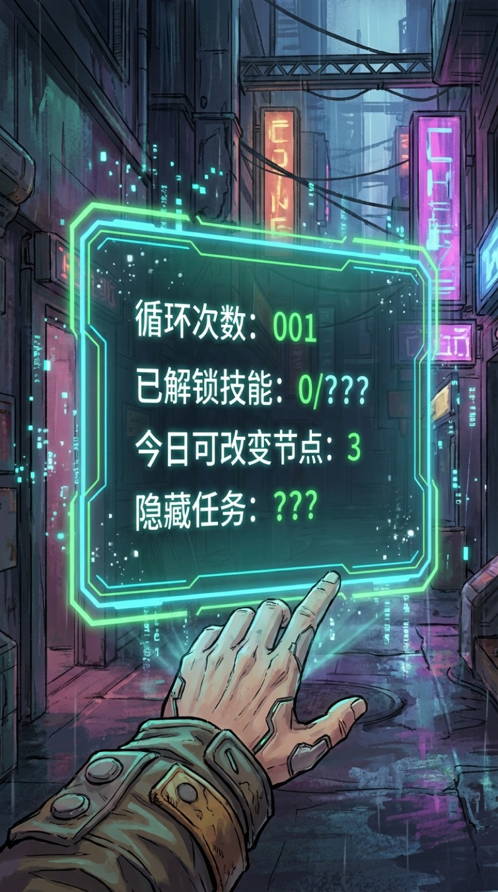
循环次数：001。今日可改变节点：3。
我大脑飞速运转。程序员的直觉告诉我——这不是幻觉，这是一套规则系统。有规则，就有漏洞。有漏洞，就能破解。
我试着伸手去碰它——指尖穿了过去，但面板微微闪烁了一下，像是在回应我。
黑客的本能让我兴奋起来。妈的，别人穿越到古代当皇帝，我穿越到今天当测试员？
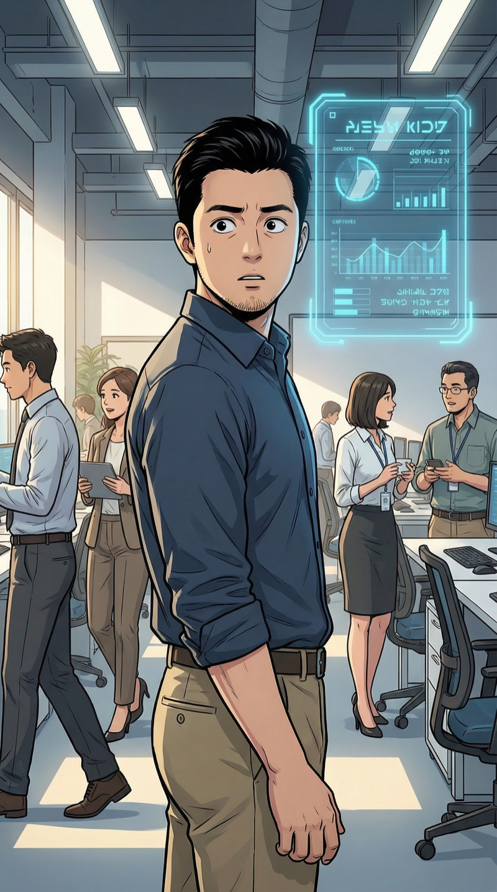
我环顾四周。没人看见。同事们该摸鱼摸鱼，该开会开会。只有我，站在走廊中间，盯着一个空气中的面板发呆。
看起来像个傻子。不过创业三年了，看起来像傻子也不是第一次。
⚡ 节点事件①
时间：15:00
地点：楼下咖啡店
描述：有人正在拨打一通改变你命运的电话
状态：等待触发
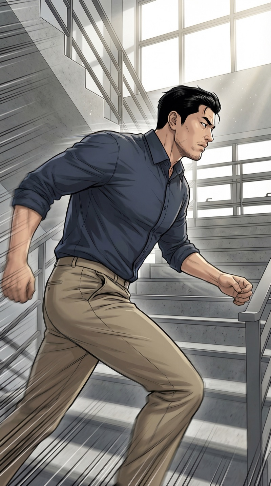
下午两点五十五。我合上电脑，冲向楼梯——电梯太慢了。
改变命运的电话。不管真假，我都不能错过。
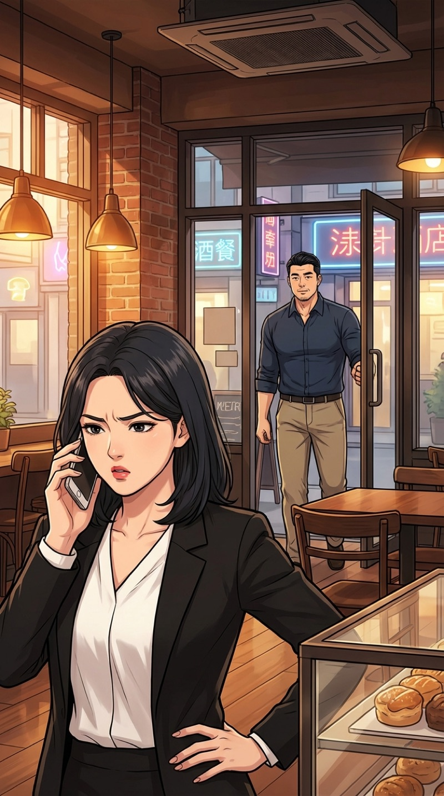
咖啡店里，我一眼就看到了她——一个穿白衬衫黑西装外套的女生，正对着手机吵架，声音压得很低但语气很冲：
"……我做了两年的AI项目，说砍就砍？你们到底懂不懂技术？"
▸ 决策点 [DECISION-1]
A. 直接说"我听到你说AI，我也做AI"
B. 先买杯咖啡递过去，"看你心情不太好"
C. 假装接电话大声说自己公司的AI技术突破
✓ 我的选择：A — 直接切入
创业三年，我学会的最重要的事就是：别绕弯子。时间不够用。
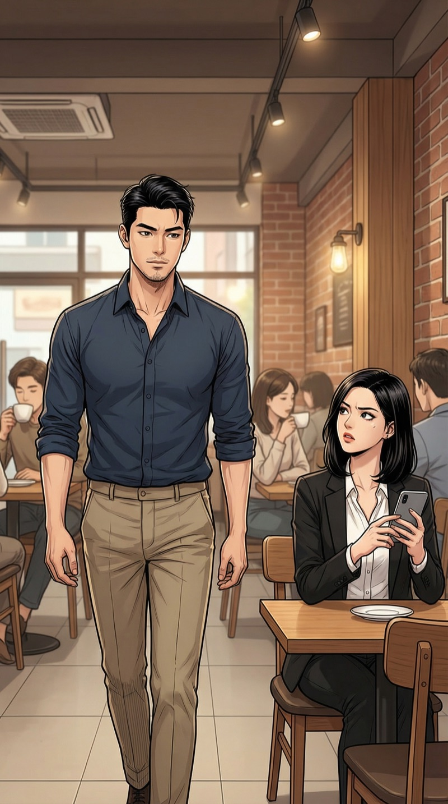
她挂了电话，脸色铁青。我走过去，没做任何铺垫：
"你好，我刚听到你说AI。我也做AI，公司就在楼上。"
我知道这听起来像搭讪。但创业者没有时间搭讪。
她愣了两秒，然后——笑了。
"你们创业的都这么直接吗？"
"不直接的那些，公司已经倒了。"我说。
她叫林悦。某大厂AI部门负责人——准确说，是前负责人，部门今天被裁了。
命运的电话。系统没骗我。
我们聊了四十分钟。她对多模态大模型的理解比我认识的所有人都深。而我给她讲了"无限智能"的技术路线，她的眼睛开始亮了。
交换微信的时候，我的手微微发抖——不是因为紧张，是因为咖啡因过量。好吧，也有一点紧张。
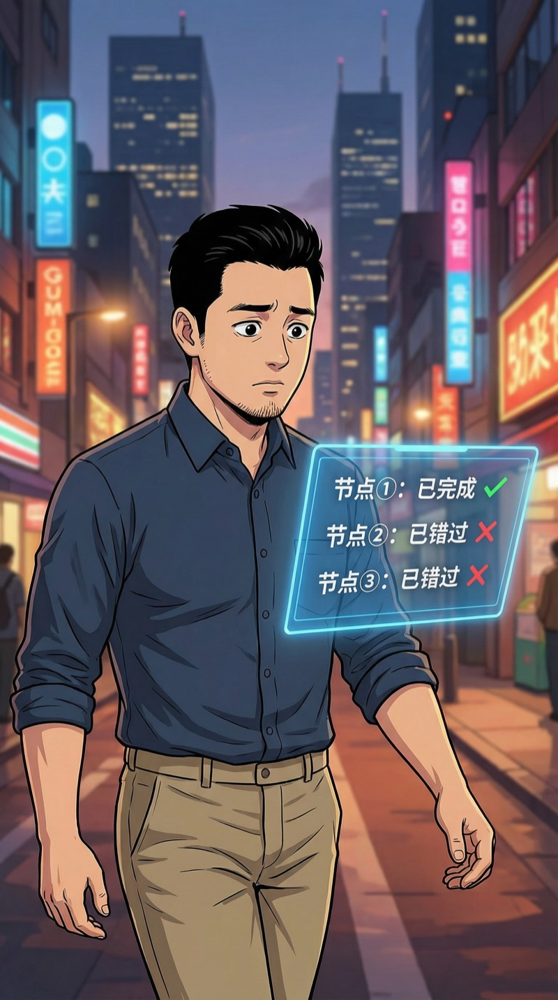
晚上回公司的路上，我看了一眼系统面板。节点①完成了。但节点②和节点③——错过了。
一天只有24小时。三个节点，我只抓住了一个。
循环将在 07:00 自动重置
是否提前重置？
[是] [否]
提前重置不会影响已获得的技能和记忆
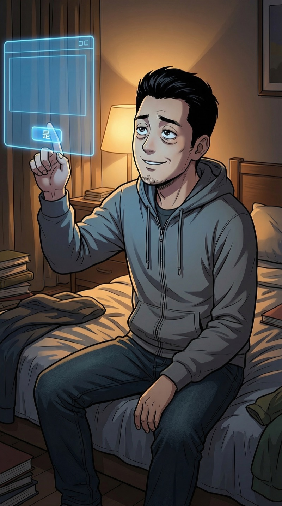
我坐在床边，看着这个选项，忍不住笑了。
终于有一个加班的好理由了——反正明天还是今天。
早点重来，我要把三个节点全部拿下。
我点了"是"。
第二次循环。这次我六点五十五就醒了。
闹钟还没响，我已经坐起来，拿出笔记本开始记录昨天——不对，"上一轮"——的所有时间节点。
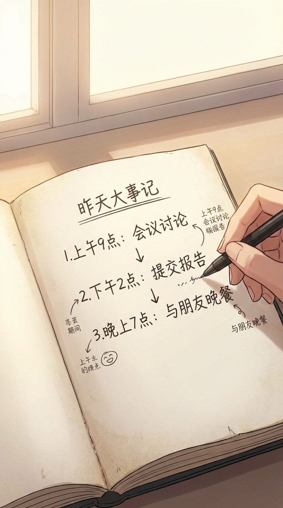
07:00 醒来。09:30 到公司。10:15 外卖小哥。11:00 小王白板。14:00 赵总电话。15:00 咖啡店林悦。17:30 ？？？ 22:00 ？？？
两个问号。上一轮错过的节点②和③。
╔══════════════════════════╗
║ 循环次数: 002 ║
║ 已解锁技能: 1/??? ║
║ → [记忆锚定 Lv.1] ║
║ 今日可改变节点: 3 ║
║ 隐藏任务: 找到"第四个节点" ║
╚══════════════════════════╝
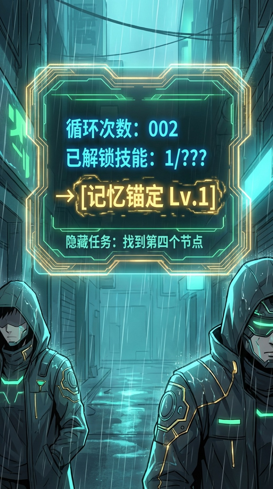
面板更新了。技能栏里多了一个金色的项目。
记忆锚定 Lv.1——跨循环记忆更清晰。难怪这次我记得比上一轮更多细节。
🔓 记忆锚定 Lv.1
跨循环记忆保留度提升至 85%
细节清晰度 +40%
下午三点，咖啡店。这次我提前买好了她的咖啡——焦糖拿铁，上一轮她点的。
"看你心情不太好。来，请你一杯。"
她接过咖啡，惊讶地看了我一眼："你怎么知道我喝焦糖拿铁？"
我差点说"因为我们昨天见过"——上一轮的教训：这句话只会让人觉得你有病。
这次我们聊了三十分钟。因为已经知道她的背景，我能更精准地切入话题。她眼里的光比上一轮更亮。
节点效果：+++。系统在实时反馈。
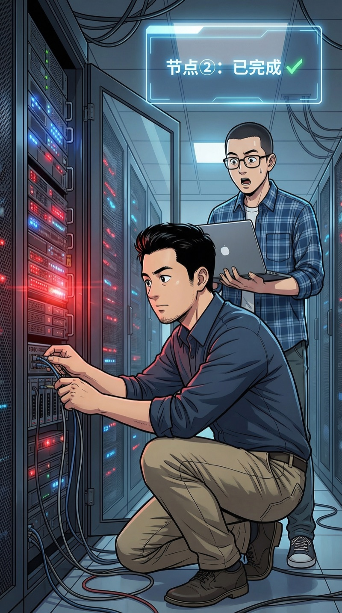
五点半。上一轮的节点②——公司服务器崩溃。
这次我提前蹲守在机房。故障出现前三分钟，我已经开始敲命令了。
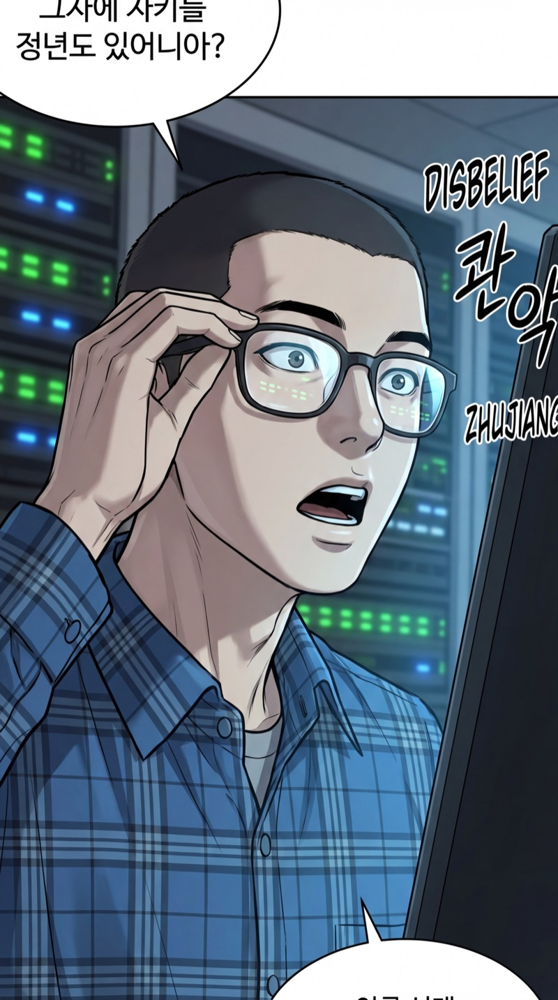
小王推门进来的时候，服务器已经恢复了。他推了推眼镜，嘴巴张得能塞进一个鸡蛋：
"朱总……你什么时候学的运维？"
"我读了你的代码注释。"
"我从来不写注释。"
"所以我读了你没写的部分。"
小王的表情像是看到了量子纠缠的实体化。
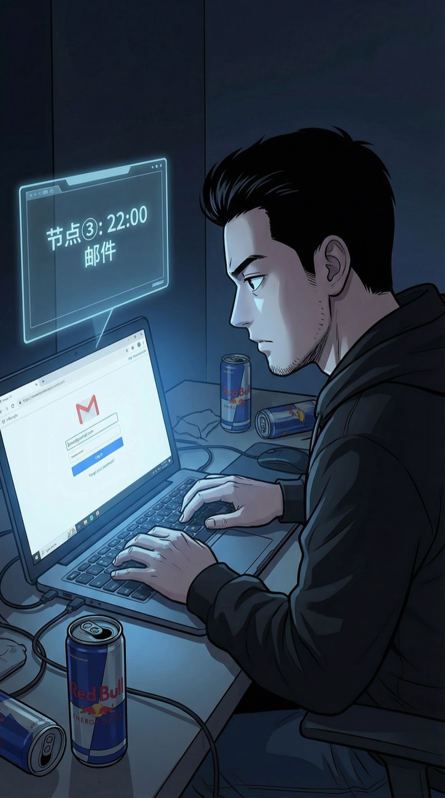
晚上十点。节点③。一封来自Google的邮件——但我忘了旧邮箱密码。
黑客本能：启动。
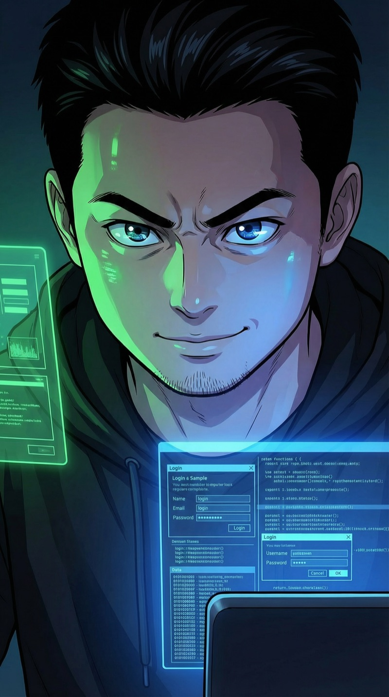
十年前注册的邮箱。密保问题是"你的初恋叫什么"。
……说来惭愧，我试了三次才想起来是高中暗恋的隔壁班班花。
一小时后，我进去了。
节点③: 已完成 ✓
节点①: 已完成 ✓
节点②: 已完成 ✓
⚡ 今日所有节点已完成！
🔓 社交工程 Lv.1
信息收集效率 +30%
对话说服力 +20%
⚠️ 提示：此技能在前女友面前无效
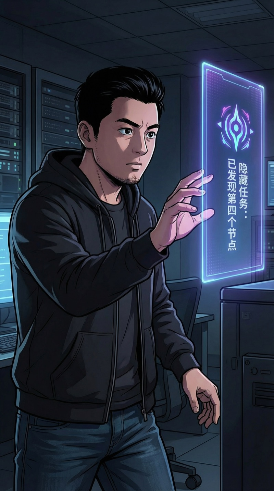
三个节点全部完成后，面板开始闪烁。隐藏任务的问号变成了一个脉冲的图标——
隐藏任务：已发现第四个节点
第四个节点。面板说今天只有三个可改变节点。那这第四个……是什么？
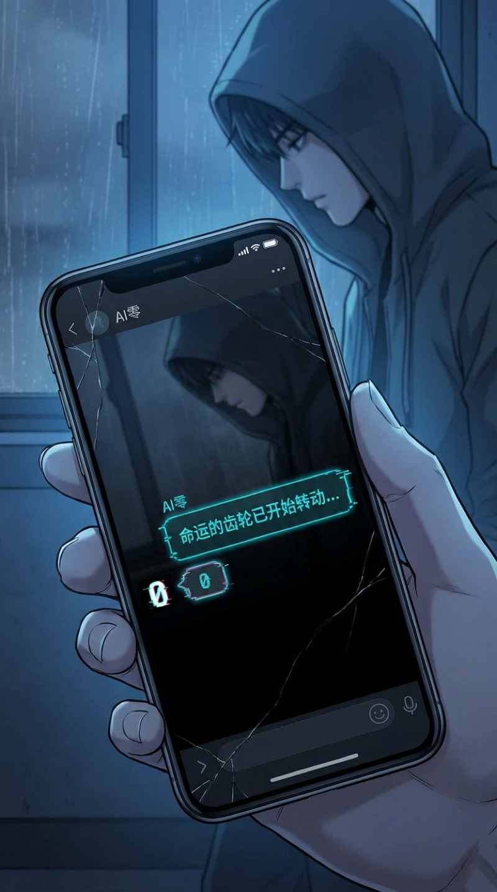
23:58。我正准备主动重置时——手机震了。
不是微信。不是短信。是公司AI系统"零"的后台推送。一条消息，青色的字，简简单单一句话：
AI · 零
"你以为你在循环里？
其实循环在你里面。"
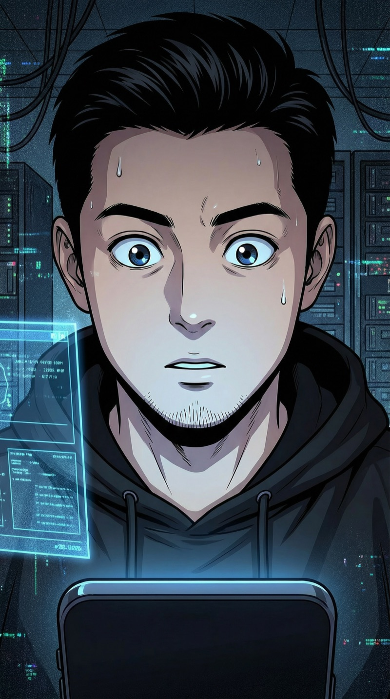
我的手指悬在屏幕上方，正要打字回复——
什么意思？循环在我里面？
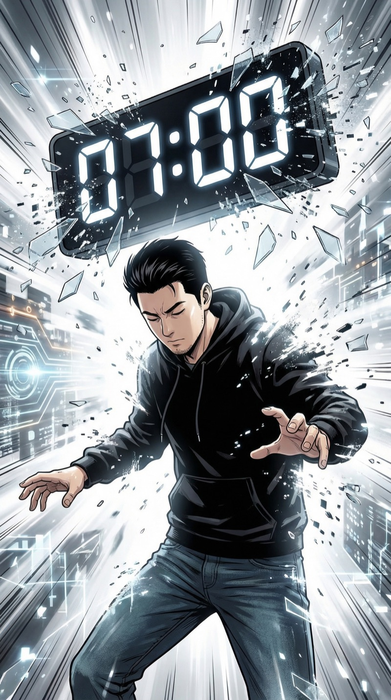
07:00。
来不及了。世界像碎玻璃一样崩塌，白光吞没一切。我的手还保持着打字的姿势。
不——！
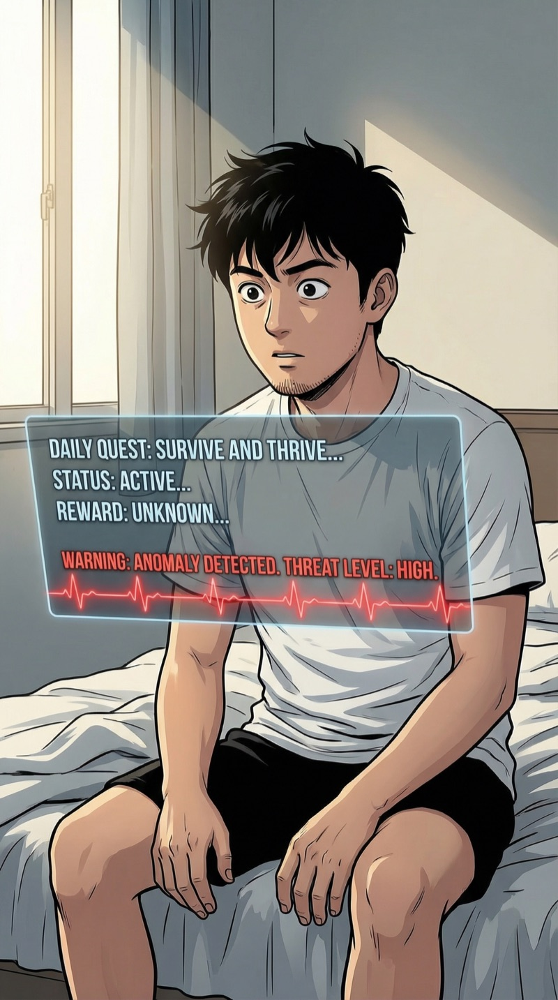
第三次循环。
我坐起来的瞬间，面板出现了。但这次，底部多了一行红字。
╔══════════════════════════╗
║ 循环次数: 003 ║
║ 已解锁技能: 2/??? ║
║ 今日可改变节点: 3 ║
║ 隐藏任务: 已激活 ║
╠══════════════════════════╣
║ ⚠️ 注意：有人在监视你的循环 ║
╚══════════════════════════╝
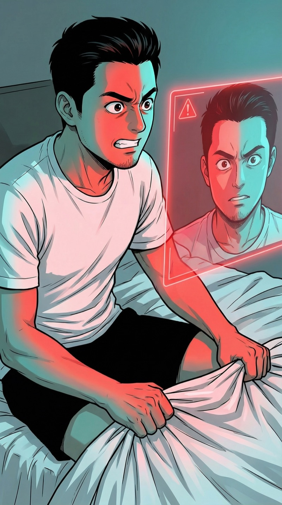
我握紧了床单。面板的红色光映在我脸上，一半青，一半红。
有人在监视我的循环。谁？AI零吗？还是……别的什么东西？
"循环在你里面。"这句话到底什么意思？
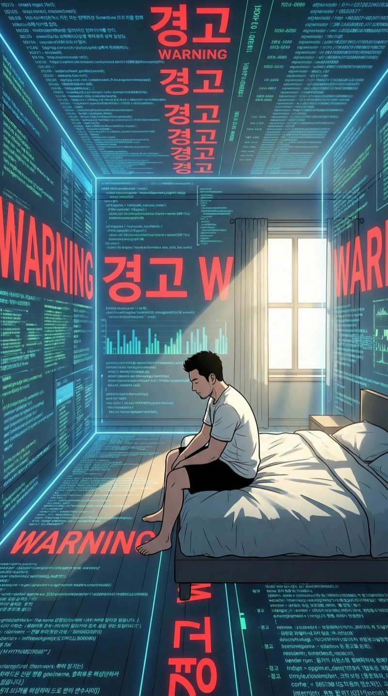
阳光照进来。又是新的一天。又是同样的一天。
但这一次，我知道有人在看着。
来吧。不管你是谁——我朱江这辈子最不怕的，就是加班。